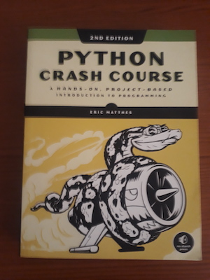

DISCLAIMER: I have NOT read all the books listed here cover to cover, but I keep referring to MOST of them from time to time.
This is an excellent introductory book on Algorithms(and Data Structures). Even though the book is based on Java, many of the fundamental concepts cut across all major programming languages. In fact, many of the algorithms in the book have been implemented in other languages like Python, C++, etc. The one thing that I like the most about the book is how the authors apply the Scientific Method in analysing the performance of the Algorithms. It's also a very practical book (Compared to CLRS), with lots of Java code that you can write and analyse on your own. Here are some of the great concepts that the book covers:
The authors have also created a two-part course on Coursera based on the book:
The Amazon link for the book can be found here.
This is an intermediate-to-advanced-level book on Algorithms. If you are totally new to Algorithms, this might not be the best book for you. As the title indicates, the book is heavily skewed towards the design of algorithms (rather than just the analysis of common algorithms). The code snippets are written in C. The thing that I like the most about the book is the concept of "War Stories" - Interesting tales of real-world technical problems that require the application of algorithms. Here are some of the great concepts that the book covers:
The Amazon link for the book can be found here.
Written by a former Microsoft software engineer, this book is a real gem for any self-respecting software engineer. It covers the art of Software Construction (or what we generally refer to as "Programming") in a very detailed(and refreshing) way. From simple things as variable names to how to write self-documenting code, this book elegantly captures the knowledge about best (and effective) software development practices. What I like most about the book is the fact that it uses a variety of different programming languages to illustrate some of the best practices (C/C++, Java, Visual Basic, etc). This is one of the reasons why I think it is better than Clean Code. (My personal opinion!) Here are some of the great concepts that the book covers:
The Amazon link for the book can be found here.
This is a more "accessible/approachable" version of the classic Gang-of-Four book. Knowledge of Design Patterns is indispensable, especially for Mid-Senior level software engineers, and this book does a great job of explaining some of the most common design patterns out there, using very entertaining illustrations/diagrams! This alone, makes the book very fun to read. Even though the code examples are in Java, the knowledge is easily transferable to other OOP languages (e.g C#). With this book, you get to learn and really understand some of the most "famous" Design Patterns, e.g. Singleton Pattern, Factory Pattern, Decorator Pattern, etc.
The Amazon link for the book can be found here.

This is, by far, the best introductory book on Python programming that I have ever come across. Written by a High School science and math teacher, the book takes a beginner approach to learning how to program. The book is divided into two parts: the first part introduces the learner to the foundational concepts of programming in Python, and the second part reinforces the concepts learnt in the first part by building three real-world projects (A game, a data visualization project and a web application). If you are a total beginner to programming, this is definitely the book for you.
The Amazon link for the book can be found here.
At over 1500 pages, this is the most comprehensive book on Python that you can find around. Mark Lutz is considered an authority on Python, having started writing about the language in the early 1990s.
The Amazon link for the book can be found here.
This book covers C exhaustively and introduces C++ as well.
A great introduction to the realm of Systems Programming using C.
This is a book for those developers who already have some experience with C++ and would like to transition to a professional level.
A great book for someone who has some experience with Java already.
A book for experienced Java developers who want to be effective in their programming work.
An authoritative book on data structures and algorithms using Java.
This is a great book on Rust, the new systems programming language from Mozilla.
Another fantastic book on Rust. Jim Blandy is a Rust guru himself.
This is a great on Erlang by one of the original designers of the language.
This book introduces database design concepts in a more friendly way.
A fantastic discussion of graph databases using neo4j.
Another fantastic book on distributed systems, but much more technical.
A great introductory book on machine laerning that uses Python.
A great introduction to the entire field of information security. A must have for anyone who cares about security at all.
Want to know how your favorite video games are designed? If yes, this is the book for you.